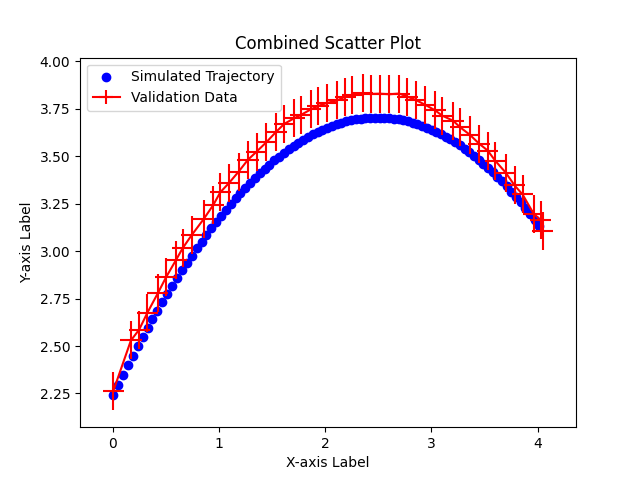
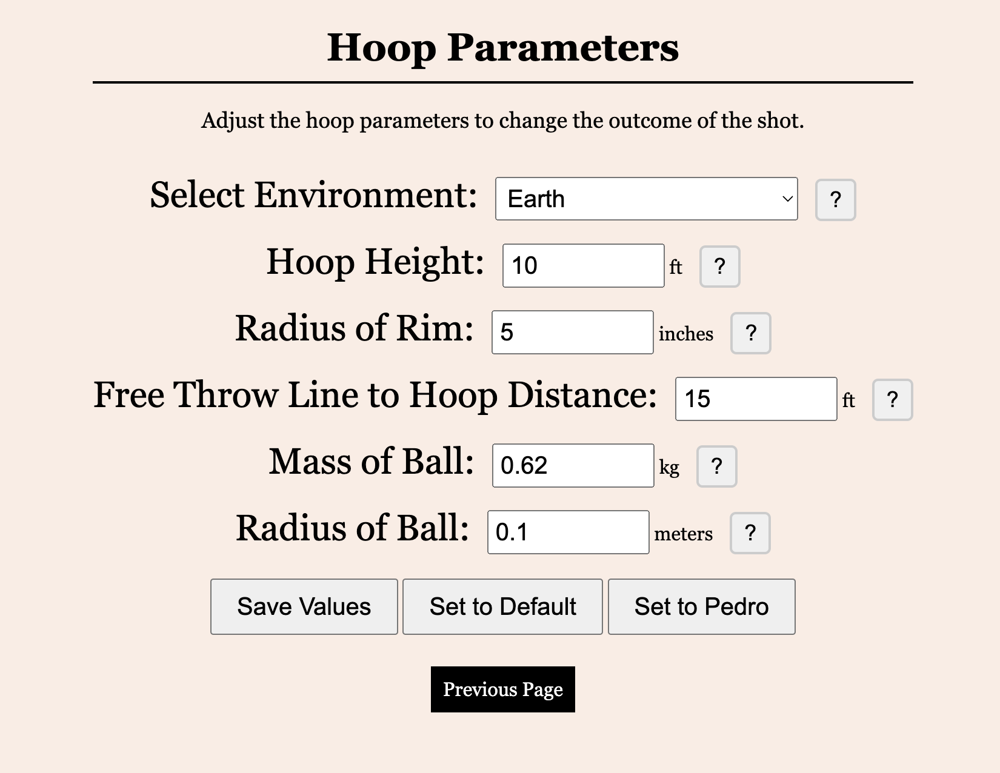

Free Throw Simulation
simulation · physicsOverview
This was a team-based final project for CIS 343: Advanced Data Analysis: Simulations at Washington & Jefferosn College. In groups of five we were tasked with creating a simulation project that could be presented at the end of the semester. I presented the project idea of a free throw simulator which was selected as one of the two projects. This simulation was validated against real data that our team collected and took into account all real life forces.
Because this was a group project for a class, I am not able to share or host the source code because it is not fully owned by me and I do not have permission to distribute it. To illustrate the functionality, I have included screenshots of the interface and if you would like a live demo feel free to contact me.
The model
Our team worked to make our digital twin of a free throw shot as accurate as possible, taking into account the physics of the shot and the environment. However, due to time and computation constraints we had to make some assumptions, our biggest simlification was treating the shot as a two-dimensional problem. although this isnt fully accurate, it provides a good approximation for educational purposes. We also left out rim and backboard physics for similar reasons, this also allowed us to model our "free throw shot" with any object (like the trash can we used for our in class demo).
We identified several key factors that influence the outcome of a free throw shot, including the release angle, initial velocity, and environmental conditions. We used classic kinomatic equations accounting for all of this plus drag and the magnus effect to get as accurate of a model as possible. All of the equations we used for our modeling can be seen below:
Validation
The most imporant part of any simulation is making sure you validate your output against the real world, in order to do this our team recorded 50 free throw shots and analyzed them with a video software to extract all of our paramaters and get the real flight path, we then ran our simulation with these same paramaters and compared the two trajectories. With this anaylsis we saw that our simulated path was within 1% of the real life trajectory showing that our model was accurate

The interface
Because we used this during a demo and to allow for easier testing we also created a frontend interface that takes in all intial paramaters and displays the shot. Images of this interface can be seen below, the main page takes simple relase inputs that allow you to take multiple shots in a row at one location while the more advanced settings allow you to edit the rim and location of the hoop you are shooting in

